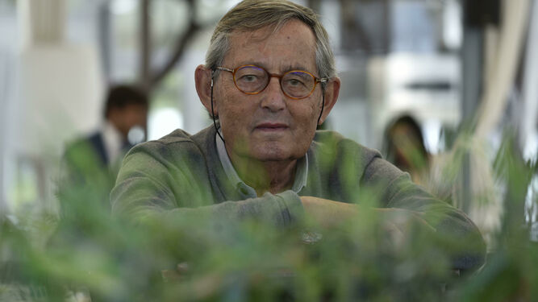

Hijo del famoso escritor Miguel Delibes,es un biólogo español. Durante
ocho años fue el director de la Estación Biológica de Doñana, y está
considerado como la máxima autoridad mundial sobre el lince ibérico.
Estudió Ciencias Biológicas en la Universidad Complutense de Madrid;
tras licenciarse en 1969 realizó la tesis doctoral en Doñana, que
finalizó en 1977; dicha tesis trató sobre la ecología trófica del lince
ibérico. Durante el tiempo que estuvo realizando la tesis, estuvo mano a
mano con Félix Rodríguez de la Fuente, quien le enseñó a escribir,
consiguiendo que los lectores se enganchasen a las historias. Más tarde
fue nombrado director de la Estación Biológica de Doñana, perteneciente
al Consejo Superior de Investigaciones Científicas, desde 1988 hasta
1996.Firmó, asimismo, el Manifiesto de Tenerife, en 1983, texto
precursor del ecologismo político en España.
